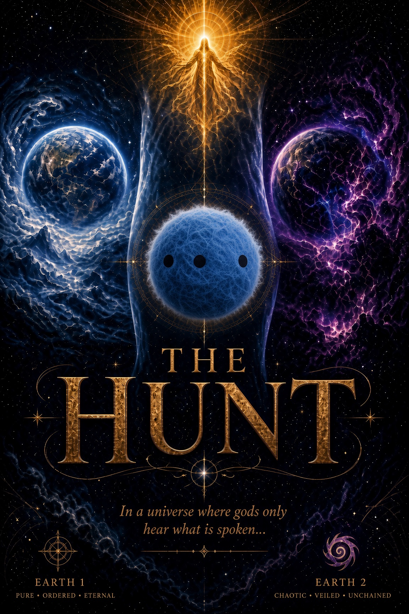

A novel in development
"In a universe where gods only hear what is spoken, the mind's deepest sleep became an open door."

An ordinary man in Nor Yesey wakes carrying memories of a dream he was never meant to remember. He was selected — not chosen, selected, by a probability algorithm scanning billions of minds for a dormant strand of alien DNA — and used as a biological relay so an advanced sibling civilization could siphon the codes of creation from a god who cannot read thoughts, only words and dreams.
The theft leaves him no longer entirely human, and the god he wants to warn has already severed the connection. To reach her he must find the mirror of himself: a woman in another galaxy carrying a fragment of that same god — and violate her sleep exactly as his own was violated.
Earth 1 and Earth 2 either side of the Barrier, rendered as a living seam — with the four principals presented as two mirrored pairs.
Open the concept → Mobile · narrative gameA choice-driven game where every line is Spoken, Thought, Silence or Act — and only some of them ever reach her. Pick a chapter and try one.
Play a scene →